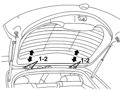
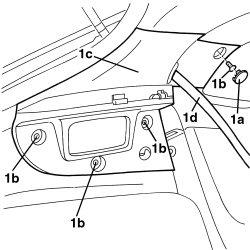
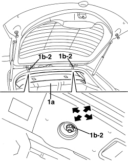

7015A14 TAILGATE - ADJUST CENTRING AND PROFILE - INCLUDES HINGE AND COMPARTMENT SEAL ADAPTATION
- Path
- Procedures > 70 FITTINGS > 7015 TAILGATE/FLAP > 7015A TAILGATE ASSEMBLY > 7015A14 TAILGATE - ADJUST CENTRING AND PROFILE - INCLUDES HINGE AND COMPARTMENT SEAL ADAPTATION
- Kind
- repair procedure (removal / refitting; the operation number is the code)
- Applies to
- all engines; all production periods
- Interactive page
- https://sloeber94.github.io/elrnDB-aBrrSpdr/en/#/946002547
Applies to: all engines; all production periods
- Open the tailgate.
1. Check that the self-adjusting buffers are working properly. Replace them if necessary.
Op. 7015B12 TAILGATE SELF-ADJUSTING BUFFERS - R.R.
2. Check that the tailgate housing seal along the entire perimeter is working properly.
3. If necessary, adjust the position of the lock striker.
Op. 7015B18 TAILGATE LOCK STRIKER - R+R

Applies to: all engines; all production periods
- If the adjustments indicated in the previous points are insufficient, adjust the position of the boot hinges as described below.
Support the boot lid appropriately when necessary.
1. Working from both sides of the vehicle, loosen the tailgate bolts and adjust the tailgate position using the slotted holes in the hinges.
2. After adjustment, tighten the bolts.
- If necessary, adjust the lock striker position as described below.

Applies to: all engines; all production periods
- If the adjustment of the fastening between the tailgate and the hinges is insufficient, proceed as follows.
Op. 7040H38 CENTRE PILLAR UPPER ELEMENT (ONE), LEFT OR RIGHT - R.R
- Remove the rear parcel shelf.
Op. 7040G30 BOOT LIGHT BULB HOLDER - R.R.
1. Working on the left and right rear pillar covers, release the bolt covers (1a).
Undo the bolts (1b).
Move and lower the pillar covers (1c) without releasing them from the seat belts (1d).

Applies to: all engines; all production periods
- Release the door housing seals in the roof lining area.
1. Gently lower the roof lining (1a) in the rear area, then loosen the nuts (1b) on both sides of the vehicle securing the tailgate hinges to the bodyshell and adjust the position of the actual hinges making use of the slotted openings.
2. After adjustment, tighten the bolts to the specified torque.
Component | Fastening | dia | Value (daNm) | Validity |
|---|---|---|---|---|
TAILGATE HINGES | Bolt | M6x16.5 | 2.4 ÷ 3.0 |
- If necessary, adjust the lock striker position as described below.

Applies to: all engines; all production periods
- Refit the parts removed.
Topics linked from this page (4)
- 7015B12 TAILGATE SELF-ADJUSTING BUFFERS - R.R.
- 7015B18 TAILGATE LOCK STRIKER - R+R
- 7040G30 BOOT LIGHT BULB HOLDER - R.R.
- 7040H38 CENTRE PILLAR UPPER ELEMENT (ONE), LEFT OR RIGHT - R.R